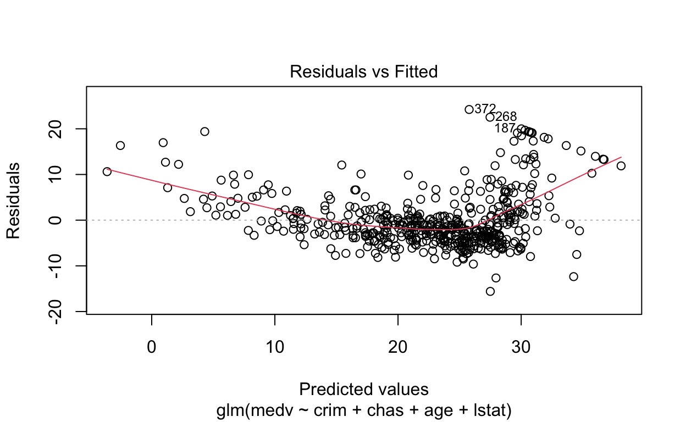
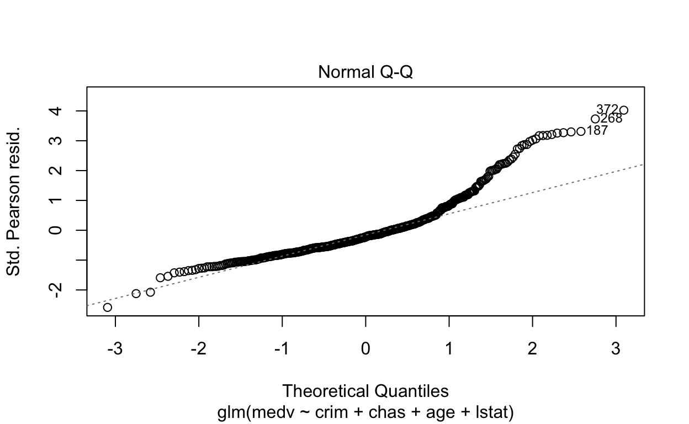
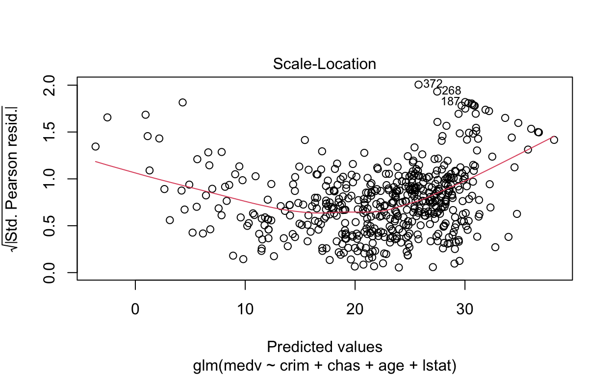
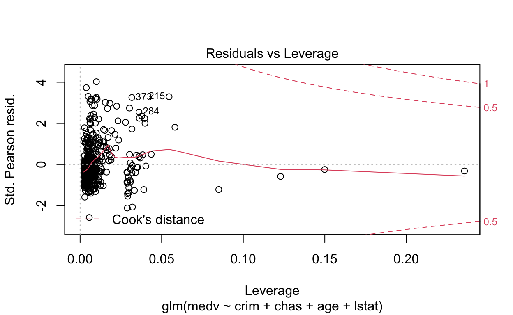

Load needed packages.
library(mlbench)
library(boot)In this notebook, we use the Boston Housing data set. “This dataset contains information collected by the U.S Census Service concerning housing in the area of Boston Mass. It was obtained from the StatLib archive (http://lib.stat.cmu.edu/datasets/boston), and has been used extensively throughout the literature to benchmark algorithms.”
Source: https://www.cs.toronto.edu/~delve/data/boston/bostonDetail.html
data(BostonHousing2)
boston <- BostonHousing2
head(boston)In this section, we begin with estimating a fairly simple regression model using the median home value as the outcome and four variables as predictors.
m1 <- glm(medv ~ crim + chas + age + lstat, data = boston)
summary(m1)##
## Call:
## glm(formula = medv ~ crim + chas + age + lstat, data = boston)
##
## Deviance Residuals:
## Min 1Q Median 3Q Max
## -15.594 -3.834 -1.319 1.932 24.224
##
## Coefficients:
## Estimate Std. Error t value Pr(>|t|)
## (Intercept) 32.73813 0.73635 44.460 < 2e-16 ***
## crim -0.07492 0.03543 -2.115 0.0350 *
## chas1 4.44525 1.07516 4.135 4.17e-05 ***
## age 0.02987 0.01220 2.448 0.0147 *
## lstat -0.97132 0.05026 -19.326 < 2e-16 ***
## ---
## Signif. codes: 0 '***' 0.001 '**' 0.01 '*' 0.05 '.' 0.1 ' ' 1
##
## (Dispersion parameter for gaussian family taken to be 36.61201)
##
## Null deviance: 42716 on 505 degrees of freedom
## Residual deviance: 18343 on 501 degrees of freedom
## AIC: 3264.7
##
## Number of Fisher Scoring iterations: 2Some more information about our first model.
anova(m1)plot(m1)
We can use predict to compute predicted home values based on our regression model.
boston$pred1 <- predict(m1)
head(boston[,c(5,20)])Next, we fit an extended model that includes lstat squared as an additional predictor variable.
m2 <- glm(medv ~ crim + chas + age + lstat + I(lstat^2), data = boston)
summary(m2)##
## Call:
## glm(formula = medv ~ crim + chas + age + lstat + I(lstat^2),
## data = boston)
##
## Deviance Residuals:
## Min 1Q Median 3Q Max
## -16.7800 -3.2266 -0.7439 2.5632 24.0745
##
## Coefficients:
## Estimate Std. Error t value Pr(>|t|)
## (Intercept) 40.752917 0.849614 47.966 < 2e-16 ***
## crim -0.128786 0.030343 -4.244 2.61e-05 ***
## chas1 3.662587 0.915025 4.003 7.21e-05 ***
## age 0.069733 0.010753 6.485 2.13e-10 ***
## lstat -2.645215 0.127447 -20.755 < 2e-16 ***
## I(lstat^2) 0.050618 0.003631 13.939 < 2e-16 ***
## ---
## Signif. codes: 0 '***' 0.001 '**' 0.01 '*' 0.05 '.' 0.1 ' ' 1
##
## (Dispersion parameter for gaussian family taken to be 26.41852)
##
## Null deviance: 42716 on 505 degrees of freedom
## Residual deviance: 13209 on 500 degrees of freedom
## AIC: 3100.6
##
## Number of Fisher Scoring iterations: 2Both models were fitted using the full data set. Evaluating the prediction performance of these models on the same data gives us their training error. Here, we compute the training MSE.
mean((predict(m1) - boston$medv)^2)## [1] 36.25024mean((predict(m2) - boston$medv)^2)## [1] 26.10525However, to get an estimate of the test error we have to proceed differently. A simple option is to split the data into a train and test set by random. Here we use sample to prepare and 80 to 20 percent split.
set.seed(7345)
train <- sample(1:nrow(BostonHousing2), 0.8*nrow(BostonHousing2))The resulting object gives us the row positions of the sampled elements. We use these positions to split the data into two pieces.
boston_train <- BostonHousing2[train,]
boston_test <- BostonHousing2[-train,]Now, refit the previous regression model using the training set only.
m3 <- glm(medv ~ crim + chas + age + lstat, data = boston_train)
m4 <- glm(medv ~ crim + chas + age + lstat + I(lstat^2), data = boston_train)On this basis, we use these models to predict home values in the hold-out test set.
pred3 <- predict(m3, newdata = boston_test)
pred4 <- predict(m4, newdata = boston_test)And evaluate the prediction performance in the test set.
mean((pred3 - boston_test$medv)^2)## [1] 46.83435mean((pred4 - boston_test$medv)^2)## [1] 36.11249Another (better) evaluation approach is to use cross-validation. To demonstrate how cross-validation works, we will build our own CV loop by hand. We start by shuffling the data with sample() and then create 10 random folds (groups).
set.seed(7346)
boston <- boston[sample(nrow(boston)),]
folds <- cut(seq(1, nrow(boston)), breaks = 10, labels = FALSE)
table(folds)## folds
## 1 2 3 4 5 6 7 8 9 10
## 51 51 50 51 50 51 50 51 50 51In the following loop, each group is used as a hold-out fold once per iteration (test_data). The other groups (train_data) are used to fit the regression model, which is then evaluated on the hold-out fold. This results in 10 test MSEs, one for each iteration.
pred <- rep(NA, nrow(boston))
for(i in 1:10){
holdout <- which(folds==i)
test_data <- boston[holdout, ]
train_data <- boston[-holdout, ]
m <- glm(medv ~ crim + chas + age + lstat, data = train_data)
pred[holdout] <- predict(m, newdata = test_data)
print(mean((pred[holdout] - boston$medv[holdout])^2))
}## [1] 39.86029
## [1] 49.81658
## [1] 35.04324
## [1] 47.37227
## [1] 17.06396
## [1] 34.60562
## [1] 37.26992
## [1] 41.01059
## [1] 41.69462
## [1] 29.93597Computing the MSE over all hold-out observations gives us the cross-validated MSE.
mean((pred - boston$medv)^2)## [1] 37.40367Cross-validation is implemented in many R packages, which typically allow more flexibility. For regression, we could e.g. use cv.glm() from the boot package. The default setting is to run leave-one-out cross-validation. For more information see ?cv.glm.
set.seed(3231)
cv.err <- cv.glm(boston, m1)
cv.err$delta## [1] 133.46155 36.49592We could also do 5-fold…
cv.err5 <- cv.glm(boston, m1, K = 5)
cv.err5$delta## [1] 133.7969 36.7041…or 10-fold CV.
cv.err10 <- cv.glm(boston, m1, K = 10)
cv.err10$delta## [1] 133.58767 36.48537On this basis, we can now check whether the extended model does not only yield a lower training error, but also performs better when using hold-out sets for model evaluation.
cv.err10.2 <- cv.glm(boston, m2, K = 10)
cv.err10.2$delta## [1] 141.27302 26.00241